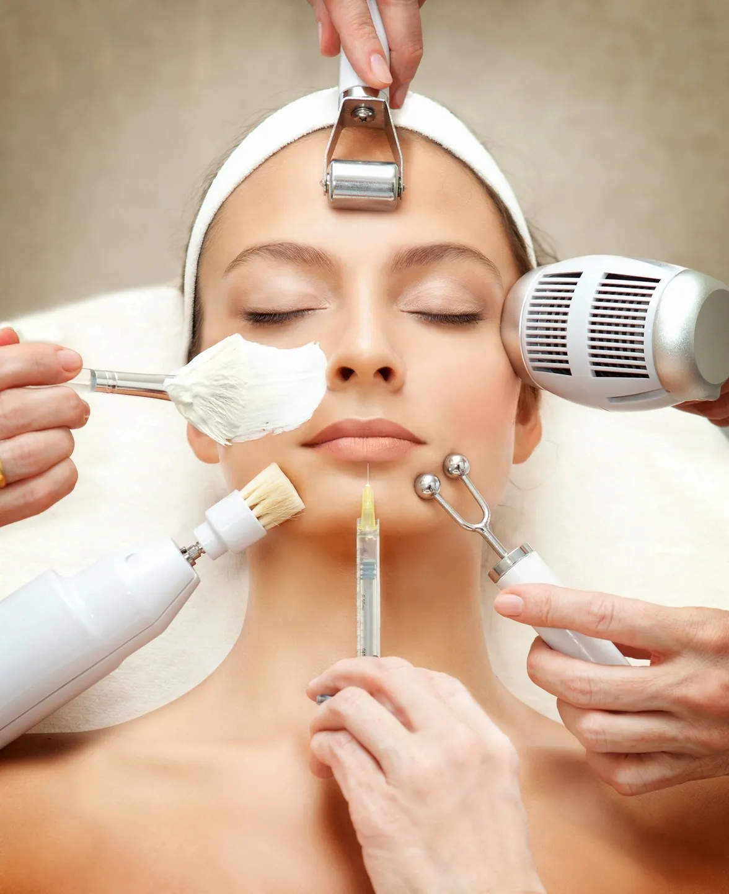

مزوتراپی پوست و مو
تقویت پوست و مو با تزریق ویتامینها و مواد فعال
مزوتراپی با رساندن مستقیم ویتامینها، مواد معدنی و آمینواسیدها به لایههای زیرین پوست یا پوست سر، به تقویت پوست و درمان ریزش مو کمک میکند.

مزوتراپی پوست و مو چیست؟
مزوتراپی روشی است که در آن ترکیبی از ویتامینها، مواد معدنی، اسیدهای آمینه و مواد فعال دیگر با تزریقهای سطحی و کمعمق به پوست یا پوست سر رسانده میشود.
این روش هم برای تقویت و شادابی پوست صورت و هم برای درمان ریزش مو و تقویت فولیکولهای مو استفاده میشود.
ترکیب مواد مورد استفاده در هر جلسه بر اساس نیاز پوست یا مو و تشخیص پزشک تعیین میشود.
مراحل انجام مزوتراپی در کلینیک نوبل
مشاوره و تشخیص
علت ریزش مو یا وضعیت پوست بررسی میشود.
تعیین ترکیب دارویی
مواد مورد نیاز بر اساس تشخیص انتخاب میشوند.
انجام تزریق
تزریقهای سطحی در ناحیه مورد نظر انجام میشود.
برنامه جلسات بعدی
فاصله و تعداد جلسات بعدی مشخص میشود.
برای چه کسانی مناسب است؟
مزوتراپی برای افرادی که با ریزش مو، نازک شدن موها یا کدری و خستگی پوست مواجه هستند مناسب است.
چرا کلینیک نوبل؟
کلینیک زیبایی نوبل با بیش از ۱۲ سال تجربه، تجهیزات مدرن و تیمی متخصص، برنامه درمانی هر مراجعهکننده را کاملا شخصیسازیشده طراحی میکند.
سوالات متداول درباره مزوتراپی
بسته به شدت ریزش مو معمولاً بین ۴ تا ۶ جلسه با فاصله ۲ تا ۴ هفته توصیه میشود.
تزریقها سطحی هستند و معمولاً ناراحتی خفیف و قابل تحملی دارند.
کاهش ریزش مو معمولاً طی چند هفته اول و رشد مجدد در طول چند ماه قابل مشاهده است.
همین حالا نوبت خود را رزرو کنید
کارشناسان کلینیک نوبل آماده پاسخگویی به سوالات شما و راهنمایی برای انتخاب بهترین برنامه درمانی هستند.